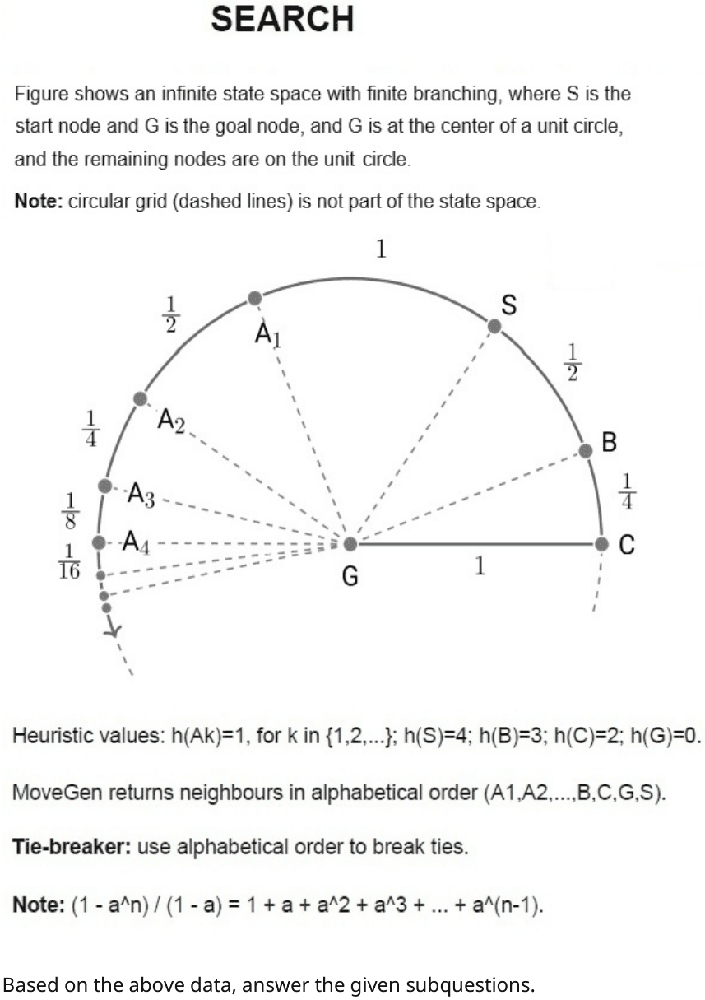
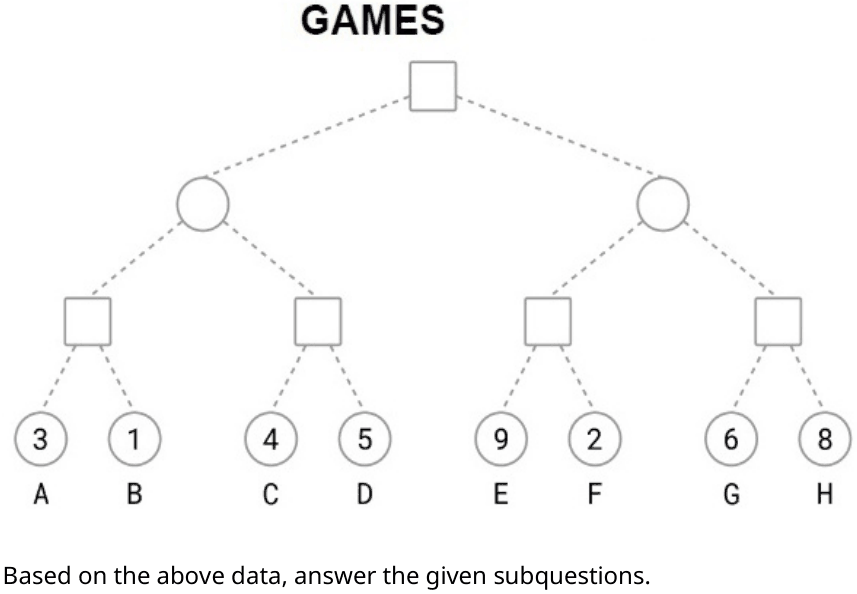
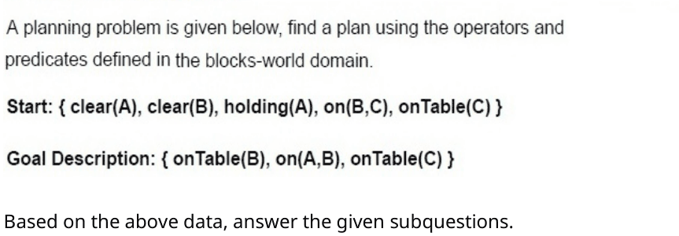

AI Quiz 2 · 2025 Term 3 — Study guide
- Time budget: ≈ 1 min per mark. Map trace ≈ 4 min, TSP node ≈ 3 min, game tree ≈ 3 min, planning ≈ 4 min.
- Order of attack: write h-values / sorted edge list / leaf values first, then the questions fall out one by one.
- Every trace below is machine-generated and cross-checked with the official key (✓ column); a ✗ would flag a transcription issue.
Q1–Q6Search · completeness on an infinite state space (DFS / Best-First / A* / WA* / BnB)6 marks
Lesson · Week 5 · Completeness on infinite state spaces (Zeno traps)
- Breadth-First is complete whenever the branching factor is finite — the goal at depth d is generated after finitely many expansions, whatever the costs.
- Best-First (greedy on h) follows h only; it is complete here if G has a strictly smaller h than every competitor on OPEN at some point.
- Branch-and-Bound / A* order by g or g+h. If an infinite sequence of cheap steps has a finite sum below the goal's priority (1/2 + 1/4 + 1/8 + … = 1 < 3), the goal is never popped: the search is trapped in the Zeno branch. Complete only if every step costs ≥ ε > 0.
- WA*: raising w multiplies h, which can make the goal's priority (g + w·0) smaller than every trap node's (g + w·h) — escaping the trap. Always write the priority of G and of the trap nodes side by side.
- Geometric sums: 1 + a + … + a^(n−1) = (1 − a^n)/(1 − a), so g(A_k) = 1 − 2^−k < 1 for every k.
- Admissible needs h ≤ h* at every node: here h*(A_k) = (1 − 2^−k) + 3 ≥ 3 ≥ h = 1.
Lesson · Week 5 · A*, WA*, Branch-and-Bound on maps
The three algorithms in one table
| Priority (lowest first) | Guarantee | |
|---|---|---|
| A* | f = g + h | optimal if h admissible (graph search also needs consistency, or re-opening) |
| WA* (w) | f = g + w·h | cost ≤ w × optimal if h admissible — not optimal in general |
| Branch & Bound | g only (h = 0) | always optimal (uniform-cost behaviour on positive costs) |
Bookkeeping that the exam checks
- Each node is a (state, parent, g) record. Refined/expanded = popped from OPEN, not generated.
- Pop the lowest f. Tie → alphabetical (read the tie-breaker line every time).
- For every neighbour m of the popped node n: if new → add to OPEN with parent n; if already on OPEN/CLOSED with a larger g → re-parent to n (and re-open if it was in CLOSED).
- Stop when the goal is popped (not when generated). Path = follow parents back.
Admissibility test in 30 seconds
h is admissible iff h(n) ≤ h*(n) for every n, where h* is the true cheapest cost to G. To refute, find one violation. Fast hunt: look at G's neighbours first — if h(n) > cost(n→G) you are done. Manhattan distance is admissible only when every edge costs ≥ its grid length; the exam maps deliberately use cheap edges (cost 2 across 3 tiles, etc.) so the answer is almost always No.
Tricks for speed
- Write the h-value beside every node first (Manhattan = |Δx|+|Δy|, count tiles on the figure).
- A* with an inadmissible h can return a sub-optimal path: the goal gets popped through a path that looked cheap because h over-estimated the good branch.
- WA* with larger w behaves more greedily (head straight to G); with w=1 it is A*, with w→∞ it is Best-First.
- BnB on these maps = Dijkstra from S; its popped cost at G is the optimal cost. Use it to check whether A*/WA* paths are optimal.
Question data

Worked solution
f-values along the infinite chain
| node | g | A*: f = g + 1 | WA* w=2: f = g + 2 |
|---|---|---|---|
| A1 | 1 | 2 | 3 |
| A2 | 1.5 | 2.5 | 3.5 |
| A3 | 1.75 | 2.75 | 3.75 |
| A4 | 1.875 | 2.875 | 3.875 |
| A5 | 1.938 | 2.938 | 3.938 |
| A6 | 1.969 | 2.969 | 3.969 |
| node | g | h | A*: f | WA*: f |
|---|---|---|---|---|
| B | 0.5 | 3 | 3.5 | 6.5 |
| C | 0.75 | 2 | 2.75 | 4.75 |
| G | 1.75 | 0 | 1.75 | 1.75 |
Reading the table
- DFS: MoveGen order is A1, A2, …, B, C, G, S. From S the first child is A1, then A2, … — the stack never gets back to B, so the infinite A-chain swallows the search → No.
- Best-First: every A_k has h=1 < h(B)=3, so it dives down the chain forever → No.
- A*: f(A_k) = (2 − 2^(1−k)) + 1 < 3 for every k, while f(B) = 3.5 > 3 — B (the only road to G) is never popped → No.
- WA* (w=2): f(A_k) < 4 < f(B) = 6.5 → same trap → No.
- BnB (g only): g(A_k) → 2 but g(G) = 0.5+0.25+1 = 1.75; only A1…A3 (g ≤ 1.75) go first → pop order S, B, C, A1, A2, A3, G → Yes.
h(S)=4 but h*(S) = 1/2 + 1/4 + 1 = 1.75 → h overestimates → not admissible.
Answer sheet
| Q | asks for | answer | key | why / how |
|---|---|---|---|---|
| Q1 | Does DFS find the goal? (B=No) | B | ✓ | A1 is the first child; the infinite A-chain is explored depth-first forever |
| Q2 | Does Best-First find the goal? (B=No) | B | ✓ | h(A_k)=1 < h(B)=3 on every step |
| Q3 | Does BnB find the goal? (A=Yes) | A | ✓ | g(G)=1.75 is finite and only finitely many A_k have g ≤ 1.75 |
| Q4 | Does A* find the goal? (B=No) | B | ✓ | f(A_k) < 3 < f(B)=3.5 |
| Q5 | Does WA* (w=2) find the goal? (B=No) | B | ✓ | f(A_k) < 4 < f(B)=6.5 |
| Q6 | Is h admissible? (B=No) | B | ✓ | h(S)=4 > h*(S)=1.75 |
Q7–Q8Search methods · concept questions2 marks
Lesson · Week 5 · A*, WA*, Branch-and-Bound on maps
The three algorithms in one table
| Priority (lowest first) | Guarantee | |
|---|---|---|
| A* | f = g + h | optimal if h admissible (graph search also needs consistency, or re-opening) |
| WA* (w) | f = g + w·h | cost ≤ w × optimal if h admissible — not optimal in general |
| Branch & Bound | g only (h = 0) | always optimal (uniform-cost behaviour on positive costs) |
Bookkeeping that the exam checks
- Each node is a (state, parent, g) record. Refined/expanded = popped from OPEN, not generated.
- Pop the lowest f. Tie → alphabetical (read the tie-breaker line every time).
- For every neighbour m of the popped node n: if new → add to OPEN with parent n; if already on OPEN/CLOSED with a larger g → re-parent to n (and re-open if it was in CLOSED).
- Stop when the goal is popped (not when generated). Path = follow parents back.
Admissibility test in 30 seconds
h is admissible iff h(n) ≤ h*(n) for every n, where h* is the true cheapest cost to G. To refute, find one violation. Fast hunt: look at G's neighbours first — if h(n) > cost(n→G) you are done. Manhattan distance is admissible only when every edge costs ≥ its grid length; the exam maps deliberately use cheap edges (cost 2 across 3 tiles, etc.) so the answer is almost always No.
Tricks for speed
- Write the h-value beside every node first (Manhattan = |Δx|+|Δy|, count tiles on the figure).
- A* with an inadmissible h can return a sub-optimal path: the goal gets popped through a path that looked cheap because h over-estimated the good branch.
- WA* with larger w behaves more greedily (head straight to G); with w=1 it is A*, with w→∞ it is Best-First.
- BnB on these maps = Dijkstra from S; its popped cost at G is the optimal cost. Use it to check whether A*/WA* paths are optimal.
Question data
Worked solution
Longest path (most expensive path)
To maximise cost, B&B must keep refining the largest partial solution. In a graph where every move is reversible, BnB-1 (allows cyclic expansions) would grow a path forever by bouncing back and forth, with costs > 1 making the path longer each time — it never terminates. BnB-2 (cycle-free paths) bounds every path by the number of nodes, so refining the largest partial solution first explores all simple paths and the best complete one is the most expensive. A* with a largest-f rule cannot keep a consistent “best g” via parent pointers for maximisation → not valid.
Combining admissible heuristics
| combination | admissible? | why |
|---|---|---|
| h/2 + k/2 | yes | average of two lower bounds is ≤ the larger bound ≤ h* |
| h + k | no | can reach 2h* (e.g. both = h*) |
| max(h, k) | yes | both ≤ h*, so the max is ≤ h* |
| min(h, k) | yes | ≤ either one ≤ h* |
Answer sheet
| Q | asks for | answer | key | why / how |
|---|---|---|---|---|
| Q7 | algorithm for the most expensive path (B: BnB-2 refining the largest) | B | ✓ | needs exhaustive search over cycle-free partial paths, selecting the largest |
| Q8 | admissible combinations (A, C, D) | ACD | ✓ | h/2+k/2, max, min stay ≤ h*; h+k can exceed h* |
Q9–Q13TSP Branch-and-Bound · first three segments5 marks
Lesson · Week 5 · TSP Branch-and-Bound (include / exclude segments)
Search tree
Root S0 = all tours. Pick the shortest undecided segment xy (tie → alphabetical). Child 1 = S0 + xy (include), child 2 = S0 + ~xy (exclude). Always refine the open node with the smallest lower bound; stop when the cheapest open node is a complete tour.
Lower bound of a node
For each city take the two cheapest allowed edges (permanently-included edges are forced in; excluded ones are not allowed), sum over all cities, then divide by 2 (each segment is counted at both ends).
Inference rules — apply until nothing changes
- Degree 2 reached: a city with 2 included segments → exclude all its other segments.
- Only two options left: a city with exactly 2 non-excluded segments → include both.
- No sub-tours: an included path that would close into a cycle shorter than N cities → exclude the closing segment.
Counting tours in a node: after full inference, the number of Hamiltonian cycles that contain every included and avoid every excluded segment. (N cities → (N−1)!/2 tours in S0: 5→12, 6→60.) Included + excluded counts usually give the fastest sanity check: if included = N the node is a single tour.
Question data

Worked solution
Distance matrix & sorted segment list
| A | B | C | D | E | |
|---|---|---|---|---|---|
| A | · | 88 | 92 | 50 | 76 |
| B | 88 | · | 80 | 40 | 140 |
| C | 92 | 80 | · | 96 | 100 |
| D | 50 | 40 | 96 | · | 120 |
| E | 76 | 140 | 100 | 120 | · |
Sorted segments (cheapest first): BD40 < AD50 < AE76 < BC80 < AB88 < AC92 < CD96 < CE100 < DE120 < BE140
Root S0 lower bound
| city | two cheapest allowed segments | sum |
|---|---|---|
| A | AD=50 + AE=76 | 126 |
| B | BD=40 + BC=80 | 120 |
| C | BC=80 + AC=92 | 172 |
| D | BD=40 + AD=50 | 90 |
| E | AE=76 + CE=100 | 176 |
| Σ | 684 → ÷2 = 342 |
Segments processed: xy = BD, uv = AD, pq = AE
Each step takes the next-shortest undecided segment from the sorted list: BD (40), then AD (50), then — after inference — AE (76).
Node ~BD
| city | two cheapest allowed segments | sum |
|---|---|---|
| A | AD=50 + AE=76 | 126 |
| B | BC=80 + AB=88 | 168 |
| C | BC=80 + AC=92 | 172 |
| D | AD=50 + CD=96 | 146 |
| E | AE=76 + CE=100 | 176 |
| Σ | 788 → ÷2 = 394 |
Node (S0,BD,AD) — inference
| # | because… | ⇒ |
|---|---|---|
| 1 | D already has 2 included segments (AD, BD) | exclude CD |
| 2 | D already has 2 included segments (AD, BD) | exclude DE |
| 3 | path A–D–B would close into a sub-tour of 3 < 5 cities | exclude AB |
2 tours remain: ACEBDA, ADBCEA.
Node (S0,BD,AD,AE)
| city | two cheapest allowed segments | sum |
|---|---|---|
| A | AD=50 + AE=76 | 126 |
| B | BD=40 + BC=80 | 120 |
| C | BC=80 + CE=100 | 180 |
| D | BD=40 + AD=50 | 90 |
| E | AE=76 + CE=100 | 176 |
| Σ | 692 → ÷2 = 346 |
| tour | cost |
|---|---|
| ADBCEA | 346 |
One tour left ⇒ the bound is its exact cost; this is the optimal tour once no open node has a smaller bound.
Answer sheet
| Q | asks for | answer | key | why / how |
|---|---|---|---|---|
| Q9 | lower bound of S0 | 342 | ✓ | Σ two cheapest per city ÷ 2 |
| Q10 | first segment xy | BD | ✓ | shortest segment |
| Q11 | cost of node ~xy | 394 | ✓ | recompute bound without xy |
| Q12 | # tours in (S0,xy,uv) | 2 | ✓ | tours containing both segments |
| Q13 | cost of (S0,xy,uv,pq) | 346 | ✓ | exact tour cost after full inference |
Q14–Q20Games · strategies, Alpha-Beta, SSS*7 marks
Lesson · Week 7 · Minimax, strategies, Alpha-Beta
Minimax & strategies
- Value of a MAX node = max of children; MIN node = min of children. Leaves carry the evaluation (W/D/L = +1/0/−1).
- A strategy for MAX keeps one child at every MAX node and all children at every MIN node. Number of MAX strategies = ∏ (branching factor) over the MAX nodes actually reachable in the strategy tree. 2-ply, b=3 → 3 strategies; MAX–MIN–MAX–MIN with b=2 → 2·2² = 8.
- Best strategy: MAX picks the child with the optimal value at each MAX node, MIN keeps all children. Its leaves are the evidence that the root value is guaranteed.
- Single-leaf flip (W/D/L trees): only leaves that decide the value on the principal line can change the outcome — try raising/lowering each such leaf by one step and re-run minimax.
Alpha-Beta (left to right)
- α = best MAX can already guarantee on the path (starts −∞), β = best MIN can already guarantee (starts +∞). Pass α, β down; update on the way back.
- β-cut at a MAX node: stop as soon as a child value ≥ β. α-cut at a MIN node: stop as soon as a child value ≤ α. The remaining siblings (and their whole subtrees) are pruned.
- Names to remember: Alpha-cut is made by a MIN node and prunes MIN's remaining children; Beta-cut is made by a MAX node.
- Ordering matters: best-case (best move first) examines ≈ b^(d/2) leaves, worst-case all b^d.
Lesson · Week 7 · SSS* (best-first game-tree search)
SSS* keeps an OPEN list of (node, status, h) ordered by h descending (an upper bound on the root value). Ties: newly inserted entries go in front of equal-h entries.
- Start with (root, LIVE, +∞). Pop the top entry.
- LIVE leaf → (leaf, SOLVED, min(h, eval)). LIVE MAX → push all children LIVE (same h). LIVE MIN → push only its first child LIVE.
- SOLVED node n with parent MAX → (parent, SOLVED, h) and purge every OPEN entry below that parent (the parent's other branches are no longer needed). SOLVED n, parent MIN → push the next sibling LIVE, or (parent, SOLVED, h) if n was the last child.
- Stop when (root, SOLVED, h) is popped: h is the minimax value.
Initial cluster = the leaves that become SOLVED before any smaller h appears — first-descent of the tree, one leaf per MIN pair. Leaves SOLVED later are the ones listed in "SOLVED (other than initial)" questions. A pruned-from-queue SOLVED leaf is one removed by the purge step without ever being popped.
Question data

Worked solution
Cut log
| node | cut | why | leaves pruned |
|---|---|---|---|
| MAX {C…D} | beta-cut after child 1 (value 4) | α=−∞, β=3 → value ≥ β | D |
SSS* trace — entries are node.status.h (L = LIVE, S = SOLVED); OPEN is sorted top→bottom
| # | popped | pushed | purged | OPEN after |
|---|---|---|---|---|
| 1 | {A…H}.L.∞ | {A…D}.L.∞, {E…H}.L.∞ | {A…D}.L.∞, {E…H}.L.∞ | |
| 2 | {A…D}.L.∞ | {A…B}.L.∞ | {A…B}.L.∞, {E…H}.L.∞ | |
| 3 | {A…B}.L.∞ | A.L.∞, B.L.∞ | A.L.∞, B.L.∞, {E…H}.L.∞ | |
| 4 | A.L.∞ | A.S.3 | B.L.∞, {E…H}.L.∞, A.S.3 | |
| 5 | B.L.∞ | B.S.1 | {E…H}.L.∞, A.S.3, B.S.1 | |
| 6 | {E…H}.L.∞ | {E…F}.L.∞ | {E…F}.L.∞, A.S.3, B.S.1 | |
| 7 | {E…F}.L.∞ | E.L.∞, F.L.∞ | E.L.∞, F.L.∞, A.S.3, B.S.1 | |
| 8 | E.L.∞ | E.S.9 | F.L.∞, E.S.9, A.S.3, B.S.1 | |
| 9 | F.L.∞ | F.S.2 | E.S.9, A.S.3, F.S.2, B.S.1 | |
| 10 | E.S.9 | {E…F}.S.9 | F.S.2 | {E…F}.S.9, A.S.3, B.S.1 |
| 11 | {E…F}.S.9 | {G…H}.L.9 | {G…H}.L.9, A.S.3, B.S.1 | |
| 12 | {G…H}.L.9 | G.L.9, H.L.9 | G.L.9, H.L.9, A.S.3, B.S.1 | |
| 13 | G.L.9 | G.S.6 | H.L.9, G.S.6, A.S.3, B.S.1 | |
| 14 | H.L.9 | H.S.8 | H.S.8, G.S.6, A.S.3, B.S.1 | |
| 15 | H.S.8 | {G…H}.S.8 | G.S.6 | {G…H}.S.8, A.S.3, B.S.1 |
| 16 | {G…H}.S.8 | {E…H}.S.8 | {E…H}.S.8, A.S.3, B.S.1 | |
| 17 | {E…H}.S.8 | {A…H}.S.8 | A.S.3, B.S.1 | {A…H}.S.8 |
| 18 | {A…H}.S.8 | — | DONE: root value 8 |
Initial cluster (leaves SOLVED on the first dive, h = ∞): A, B, E, F. Leaves SOLVED later: G, H. SOLVED leaves purged without being popped: A, B, F, G.
All MAX strategies (one leaf per reachable MAX node)
| # | leaves chosen | value of strategy |
|---|---|---|
| 1 | B,C | 1 |
| 2 | B,D | 1 |
| 3 | F,G | 2 |
| 4 | F,H | 2 |
| 5 | A,C | 3 |
| 6 | A,D | 3 |
| 7 | E,G | 6 |
| 8 | E,H | 8 |
Answer sheet
| Q | asks for | answer | key | why / how |
|---|---|---|---|---|
| Q14 | horizon nodes of the best strategy | E,H | ✓ | MAX takes its best child, MIN keeps both children |
| Q15 | number of MAX strategies | 8 | ✓ | 2 choices at the root × 2 choices at each of the 2 MAX nodes under the chosen MIN child = 2·2·2 |
| Q16 | MAX strategy most favourable to MIN | B,C | ✓ | smallest strategy value (1) — ties accepted: B,C; B,D |
| Q17 | horizon nodes pruned by Alpha-Beta | D | ✓ | leaves under a cut, in left-to-right search |
| Q18 | initial cluster of SSS* | A,B,E,F | ✓ | first dive: first leaf below every MIN node reached via all MAX alternatives |
| Q19 | SOLVED leaves other than the initial cluster | G,H | ✓ | leaves that become SOLVED after the initial cluster, before the root is solved |
| Q20 | correct statements about SSS* (C, D) | CD | ✓ | only a SOLVED node at the head of OPEN can solve its parent; a LIVE leaf at the head becomes SOLVED immediately |
Q21–Q22Automated planning · blocks world, GSP2 marks
Lesson · Week 8 · Blocks-world planning & Goal Stack Planning
Operators (preconditions → effects)
| Action | Pre | Add | Delete |
|---|---|---|---|
| Pickup(x) | armEmpty, clear(x), onTable(x) | holding(x) | armEmpty, onTable(x) |
| Putdown(x) | holding(x) | armEmpty, onTable(x) | holding(x) |
| Unstack(x,y) | armEmpty, clear(x), on(x,y) | holding(x), clear(y) | armEmpty, on(x,y) |
| Stack(x,y) | holding(x), clear(y) | armEmpty, on(x,y) | holding(x), clear(y) |
Applicable (start state): all preconditions already true → check each against the start facts. Relevant (goal): the action adds at least one goal literal.
Goal Stack Planning (GSP)
- Push the compound goal, then its literals one by one (last literal ends on top).
- Pop a satisfied literal; for an unsatisfied literal choose an action that adds it, push the action, then its compound precondition and its literals.
- When an action reaches the top, execute it (update the state) and append it to the plan.
- After a compound goal is finished, re-check it — earlier subgoals may have been undone (Sussman anomaly) and the compound goal is re-pushed.
Optimal plan = BFS over states (shortest action sequence). GSP is not guaranteed optimal; swapping the order of goal literals can make it optimal or not — compute both orders, compare to BFS length.
Question data

Worked solution
Goal: onTable(B), on(A,B), onTable(C)
Optimal plan by BFS over states — 5 actions: Putdown(A) → Unstack(B,C) → Putdown(B) → Pickup(A) → Stack(A,B)
Applicable in the start state (2 of 18 ground actions)
| action | preconditions | status |
|---|---|---|
| Putdown(A) | holding(A) | ✔ all true now |
| Stack(A,B) | holding(A), clear(B) | ✔ all true now |
Relevant to the goal (action adds a goal literal): Stack(A,B), Putdown(B), Putdown(C).
Goal Stack Planning trace (goal list pushed left→right, last literal on top) — plan found: Stack(A,B) , Unstack(A,B) , Putdown(A) , Unstack(B,C) , Putdown(B) , Pickup(A) , Stack(A,B) (7 actions)
| # | top of stack | step | stack (top → bottom) |
|---|---|---|---|
| 1 | {onTable(B), on(A,B), onTable(C)} | push compound goal's literals | {onTable(B), on(A,B), onTable(C)} |
| 2 | onTable(C) | already true → pop | onTable(C) | on(A,B) | onTable(B) | {onTable(B), on(A,B), onTable(C)} |
| 3 | on(A,B) | choose Stack(A,B) to achieve it | on(A,B) | onTable(B) | {onTable(B), on(A,B), onTable(C)} |
| 4 | clear(B) | already true → pop | clear(B) | holding(A) | {holding(A), clear(B)} | Stack(A,B) | onTable(B) | … |
| 5 | holding(A) | already true → pop | holding(A) | {holding(A), clear(B)} | Stack(A,B) | onTable(B) | {onTable(B), on(A,B), onTable(C)} |
| 6 | {holding(A), clear(B)} | compound goal satisfied → pop | {holding(A), clear(B)} | Stack(A,B) | onTable(B) | {onTable(B), on(A,B), onTable(C)} |
| 7 | Stack(A,B) | execute → append to plan | Stack(A,B) | onTable(B) | {onTable(B), on(A,B), onTable(C)} |
| 8 | onTable(B) | choose Putdown(B) to achieve it | onTable(B) | {onTable(B), on(A,B), onTable(C)} |
| 9 | holding(B) | choose Unstack(B,C) to achieve it | holding(B) | {holding(B)} | Putdown(B) | {onTable(B), on(A,B), onTable(C)} |
| 10 | on(B,C) | already true → pop | on(B,C) | clear(B) | armEmpty | {armEmpty, clear(B), on(B,C)} | Unstack(B,C) | … |
| 11 | clear(B) | choose Unstack(A,B) to achieve it | clear(B) | armEmpty | {armEmpty, clear(B), on(B,C)} | Unstack(B,C) | {holding(B)} | … |
| 12 | on(A,B) | already true → pop | on(A,B) | clear(A) | armEmpty | {armEmpty, clear(A), on(A,B)} | Unstack(A,B) | … |
| 13 | clear(A) | already true → pop | clear(A) | armEmpty | {armEmpty, clear(A), on(A,B)} | Unstack(A,B) | armEmpty | … |
| 14 | armEmpty | already true → pop | armEmpty | {armEmpty, clear(A), on(A,B)} | Unstack(A,B) | armEmpty | {armEmpty, clear(B), on(B,C)} | … |
| 15 | {armEmpty, clear(A), on(A,B)} | compound goal satisfied → pop | {armEmpty, clear(A), on(A,B)} | Unstack(A,B) | armEmpty | {armEmpty, clear(B), on(B,C)} | Unstack(B,C) | … |
| 16 | Unstack(A,B) | execute → append to plan | Unstack(A,B) | armEmpty | {armEmpty, clear(B), on(B,C)} | Unstack(B,C) | {holding(B)} | … |
| 17 | armEmpty | choose Putdown(A) to achieve it | armEmpty | {armEmpty, clear(B), on(B,C)} | Unstack(B,C) | {holding(B)} | Putdown(B) | … |
| 18 | holding(A) | already true → pop | holding(A) | {holding(A)} | Putdown(A) | {armEmpty, clear(B), on(B,C)} | Unstack(B,C) | … |
| 19 | {holding(A)} | compound goal satisfied → pop | {holding(A)} | Putdown(A) | {armEmpty, clear(B), on(B,C)} | Unstack(B,C) | {holding(B)} | … |
| 20 | Putdown(A) | execute → append to plan | Putdown(A) | {armEmpty, clear(B), on(B,C)} | Unstack(B,C) | {holding(B)} | Putdown(B) | … |
| 21 | {armEmpty, clear(B), on(B,C)} | compound goal satisfied → pop | {armEmpty, clear(B), on(B,C)} | Unstack(B,C) | {holding(B)} | Putdown(B) | {onTable(B), on(A,B), onTable(C)} |
| 22 | Unstack(B,C) | execute → append to plan | Unstack(B,C) | {holding(B)} | Putdown(B) | {onTable(B), on(A,B), onTable(C)} |
| 23 | {holding(B)} | compound goal satisfied → pop | {holding(B)} | Putdown(B) | {onTable(B), on(A,B), onTable(C)} |
| 24 | Putdown(B) | execute → append to plan | Putdown(B) | {onTable(B), on(A,B), onTable(C)} |
| 25 | {onTable(B), on(A,B), onTable(C)} | push compound goal's literals | {onTable(B), on(A,B), onTable(C)} |
| 26 | onTable(C) | already true → pop | onTable(C) | on(A,B) | onTable(B) | {onTable(B), on(A,B), onTable(C)} |
| 27 | on(A,B) | choose Stack(A,B) to achieve it | on(A,B) | onTable(B) | {onTable(B), on(A,B), onTable(C)} |
| 28 | clear(B) | already true → pop | clear(B) | holding(A) | {holding(A), clear(B)} | Stack(A,B) | onTable(B) | … |
| 29 | holding(A) | choose Pickup(A) to achieve it | holding(A) | {holding(A), clear(B)} | Stack(A,B) | onTable(B) | {onTable(B), on(A,B), onTable(C)} |
| 30 | onTable(A) | already true → pop | onTable(A) | clear(A) | armEmpty | {armEmpty, clear(A), onTable(A)} | Pickup(A) | … |
| 31 | clear(A) | already true → pop | clear(A) | armEmpty | {armEmpty, clear(A), onTable(A)} | Pickup(A) | {holding(A), clear(B)} | … |
| 32 | armEmpty | already true → pop | armEmpty | {armEmpty, clear(A), onTable(A)} | Pickup(A) | {holding(A), clear(B)} | Stack(A,B) | … |
| 33 | {armEmpty, clear(A), onTable(A)} | compound goal satisfied → pop | {armEmpty, clear(A), onTable(A)} | Pickup(A) | {holding(A), clear(B)} | Stack(A,B) | onTable(B) | … |
| 34 | Pickup(A) | execute → append to plan | Pickup(A) | {holding(A), clear(B)} | Stack(A,B) | onTable(B) | {onTable(B), on(A,B), onTable(C)} |
| 35 | {holding(A), clear(B)} | compound goal satisfied → pop | {holding(A), clear(B)} | Stack(A,B) | onTable(B) | {onTable(B), on(A,B), onTable(C)} |
| 36 | Stack(A,B) | execute → append to plan | Stack(A,B) | onTable(B) | {onTable(B), on(A,B), onTable(C)} |
| 37 | onTable(B) | already true → pop | onTable(B) | {onTable(B), on(A,B), onTable(C)} |
| 38 | {onTable(B), on(A,B), onTable(C)} | compound goal satisfied → pop | {onTable(B), on(A,B), onTable(C)} |
Goal order reversed (onTable(C), on(A,B), onTable(B)): GSP gives 5 actions vs optimal 5 → optimal. Original order: not optimal (7 vs 5).
Answer sheet
| Q | asks for | answer | key | why / how |
|---|---|---|---|---|
| Q21 | length of the optimal plan | 5 | ✓ | BFS over states; shortest action sequence |
| Q22 | applicable actions | BE | ✓ | all preconditions hold in the start state |